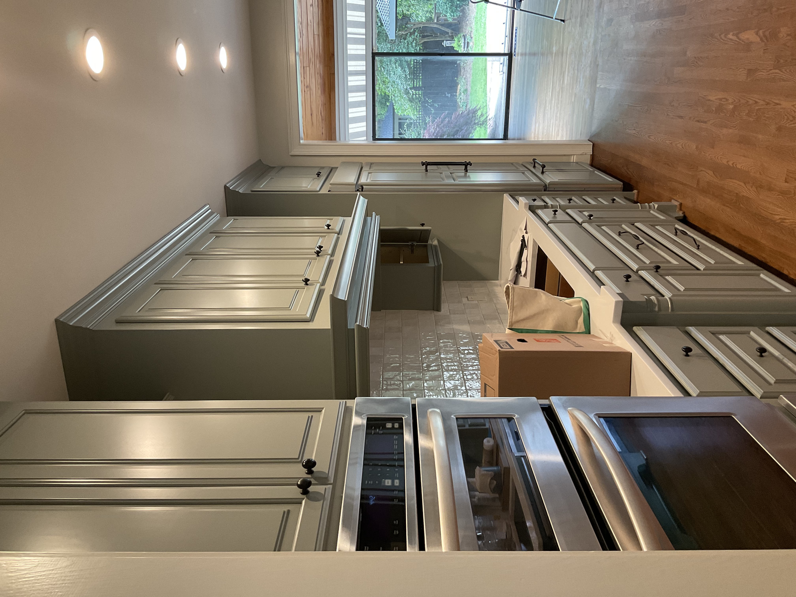
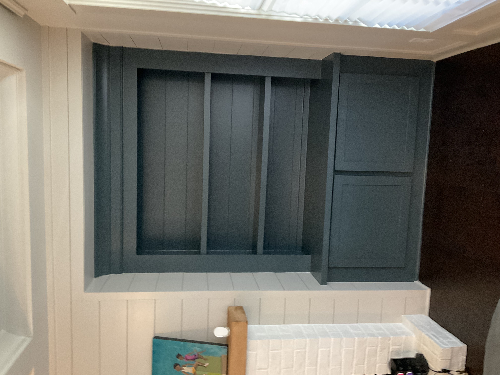
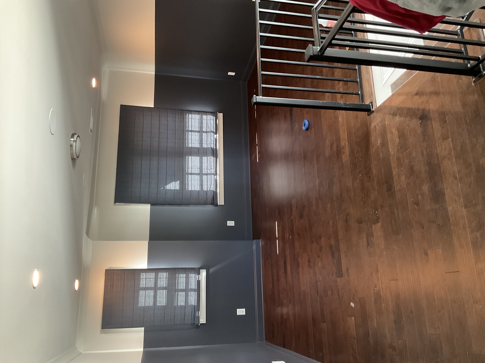
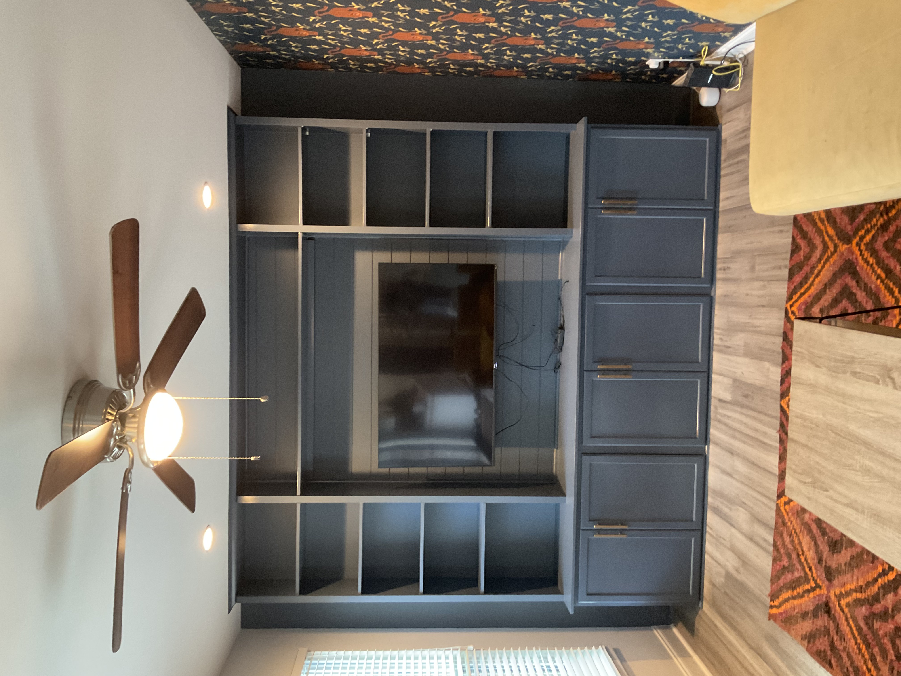
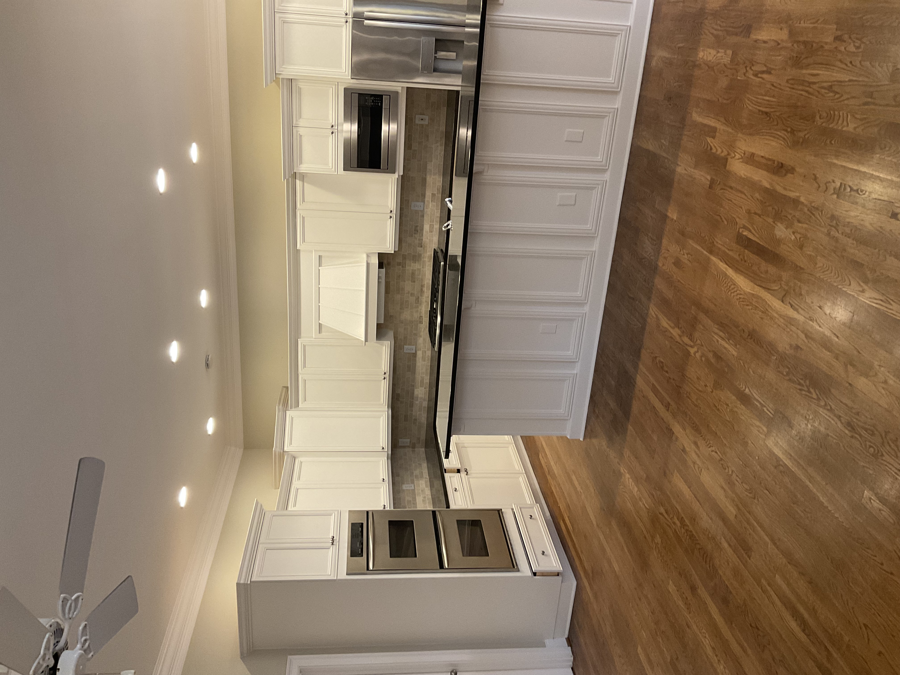

Deck & Fence Staining
Protect and beautify your outdoor spaces with high-quality stains that stand up to sun, rain, and everyday wear.
Get a Free EstimateWhat We Do
We carefully prepare and treat every surface, applying high-quality stains that protect against sun, rain, and wear while highlighting the natural beauty of the wood. Our team works efficiently and respectfully, leaving your yard clean and polished. Whether refreshing an old deck or giving a new fence a lasting finish, we combine expertise and reliability to bring your vision to life.
Our Work






Why Choose Us
- Thorough Surface Prep — Every deck and fence is cleaned and treated before stain is applied for maximum adhesion and longevity.
- Weather Protection — Our stains are built to resist UV rays, moisture, and seasonal wear so your wood stays strong longer.
- Natural Beauty Enhanced — We help you choose the right stain to bring out the grain and character of your wood.
- Clean & Respectful — We work carefully around your yard and landscaping, leaving everything tidy when we're done.
- Free Estimates — We assess the full scope and give you a clear, detailed quote upfront.
Ready to refresh your deck or fence?
Contact us today for a free, no-obligation estimate.
Contact Us